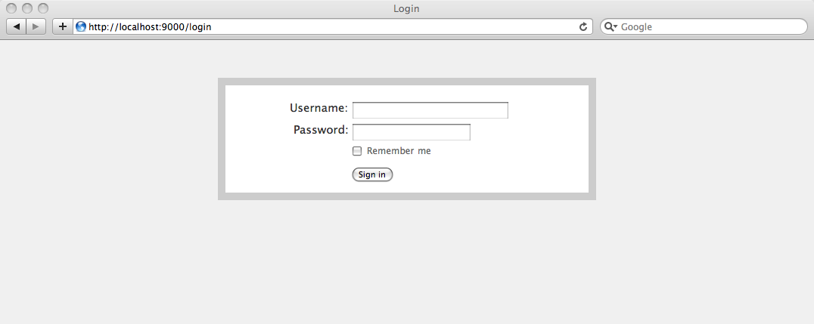
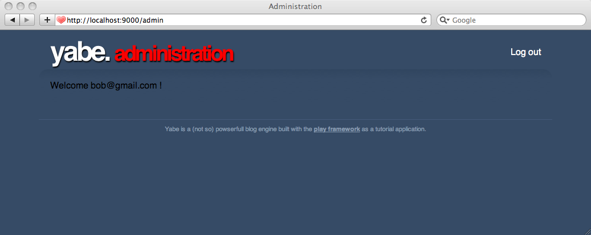
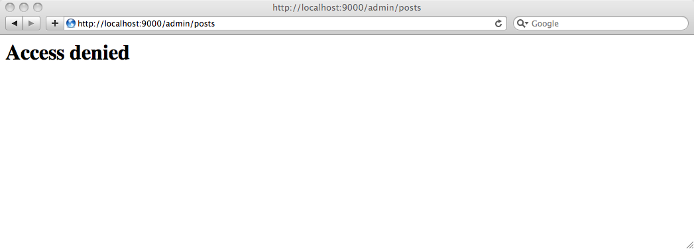
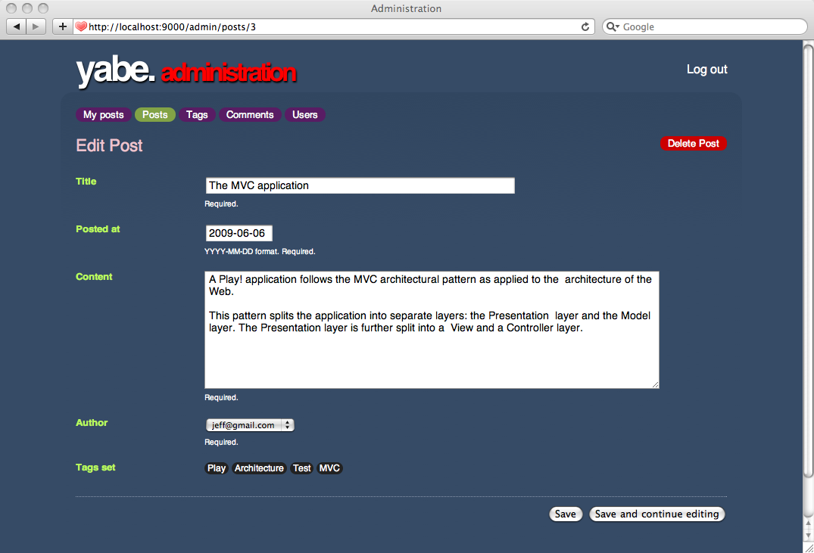
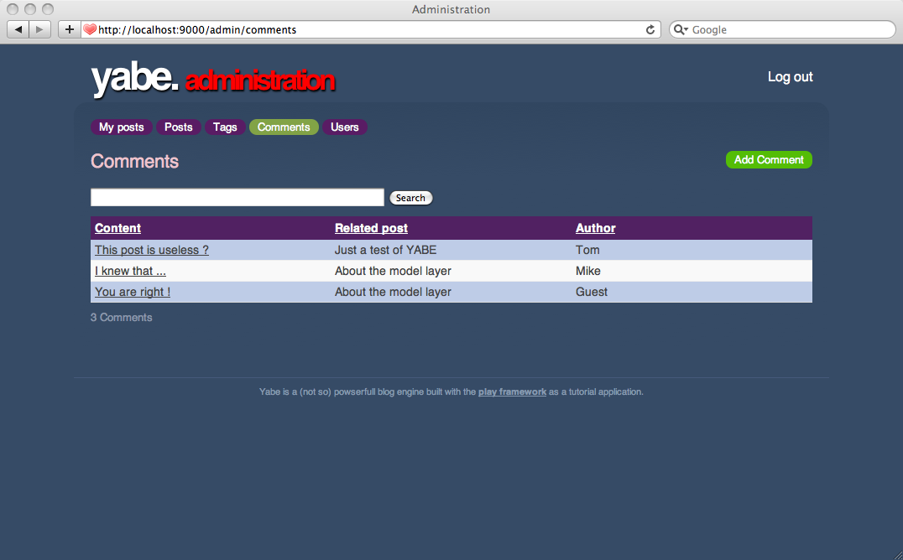
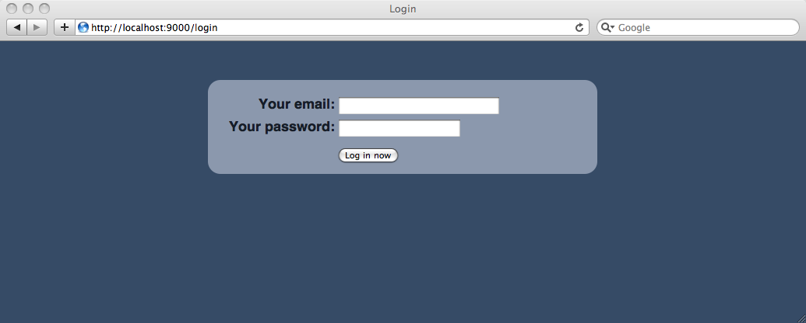

Adding authentication
Now that we have an administration area we need to plug in some authentication. Fortunately, Play has a module for that. It’s called the Secure module.
Enabling the Secure module
Enable the Secure module in the yabe/conf/application.conf file and restart the application.
# Import the secure module
module.secure=${play.path}/modules/secure
After restarting, Play should say that the module is loaded.
The Secure module comes with a set of default routes that you can easily enable in the yabe/conf/routes file (or we could define our own routes as well):
# Import Secure routes
* / module:secure
Protecting the admin controllers
The module provides a controllers.Secure controller that declares all needed interceptors. Of course we could just inherit from this controller but because Java is limited to simple inheritance it would be problematic.
Instead of directly inheriting from the Secure controller, we can annotate the admin controllers using the @With annotation to tell Play to invoke the corresponding interceptors as well:
package controllers;
import play.*;
import play.mvc.*;
@With(Secure.class)
public class Posts extends CRUD {
}
Do the same for the Comments, Users and Tags controllers.
Now if you try to access any admin action, you should get a log-in page:

In fact, for now you can try any user name/password pair, and it will just work.
Customizing the authentication process
The application has to provide an instance of controllers.Secure.Security to customize the authentication process. By creating our own version of this class we will be able to specify exactly how users should be authenticated.
Create a yabe/app/controllers/Security.java file and override the authenticate() method:
package controllers;
import models.*;
public class Security extends Secure.Security {
static boolean authenticate(String username, String password) {
return true;
}
}
As we already have the User objects part of the blog model, it is easy to implement a working version of this method:
static boolean authenticate(String username, String password) {
return User.connect(username, password) != null;
}
Now go to http://localhost:9000/logout to log out and you can try logging in with one of the users imported in the initial-data.yml file, like bob@gmail.com/secret.
Refactoring the administration area
We’ve started the administration area using the CRUD module, but it is not yet well integrated with the blog UI. We will start to work on a new administration area. This one will give each author access to his/her own posts. The full-featured administration using CRUD will still be available for super administrator users.
Let’s create a new Admin controller for the administration part:
package controllers;
import play.*;
import play.mvc.*;
import java.util.*;
import models.*;
@With(Secure.class)
public class Admin extends Controller {
@Before
static void setConnectedUser() {
if(Security.isConnected()) {
User user = User.find("byEmail", Security.connected()).first();
renderArgs.put("user", user.fullname);
}
}
public static void index() {
render();
}
}
And refactor the routes definition in yabe/conf/routes:
# Administration
GET /admin/? Admin.index
* /admin module:crud
Remember that order matters in the routes file; the first line that matches the incoming HTTP request is used. This means that the entries that map to the Admin controller must come before the second line above, which maps all other /admin requests to CRUD module pages. Otherwise, /admin/ will map to CRUD.index instead of Admin.index.
Now link the ‘Log in to write something’ text from the yabe/app/views/main.html template to this controller:
…
<ul id="tools">
<li>
<a href="@{Admin.index()}">Log in to write something</a>
</li>
</ul>
…
The last thing to make all this new stuff work is to create the yabe/app/views/Admin/index.html template. Let’s start with something simple:
Welcome ${user}!
Now, go to the blog home page, click the ‘Log in to write something’ link and you should get to the new administration area:
Good start! But since we will have several pages in this administration area, we need a super-template. Let’s create it in the yabe/app/views/admin.html file:
<!DOCTYPE html>
<html>
<head>
<title>Administration</title>
<meta http-equiv="Content-Type" content="text/html; charset=utf-8"/>
#{get 'moreStyles' /}
<link rel="stylesheet" type="text/css" media="screen"
href="@{'/public/stylesheets/main.css'}" />
<link rel="shortcut icon" type="image/png"
href="@{'/public/images/favicon.png'}" />
<script src="@{'/public/javascripts/jquery-1.4.2.min.js'}"></script>
<script src="@{'/public/javascripts/jquery.tools-1.2.5.toolbox.expose.min.js'}"></script>
</head>
<body id="admin">
<div id="header">
<div id="logo">
yabe. <span>administration</span>
</div>
<ul id="tools">
<li>
<a href="@{Secure.logout()}">Log out</a>
</li>
</ul>
</div>
<div id="main">
#{doLayout /}
</div>
<p id="footer">
Yabe is a (not so) powerful blog engine built with the
<a href="http://www.playframework.org">Play framework</a>
as a tutorial application.
</p>
</body>
</html>
As you can see, it’s very close to the template used for the front part of the blog engine. You have replaced the Log in link by a Log out link that calls the Secure controller’s logout action provided by the secure module.
Now let’s use it in the yabe/app/views/Admin/index.html template:
#{extends 'admin.html' /}
Welcome ${user}!
And refresh!

If you try the log out link it will send you back to the login form:
That’s the default way for the secure module to handle log out events. But it’s easily customizable simply by overriding the onDisconnected() method in the controllers.Security class:
static void onDisconnected() {
Application.index();
}
You can do the same for the onAuthenticated() event:
static void onAuthenticated() {
Admin.index();
}
Adding roles
Actually, we need two administration areas: one for simple editors and another one for the super administrator. As you’ve seen the User model object has an isAdmin field that indicates whether the user has super administrator rights.
The secure module not only provides authentication but authorization management too. It’s called profiles. To create an admin profile, you just need to override the check() method in the controllers.Security class:
static boolean check(String profile) {
if("admin".equals(profile)) {
return User.find("byEmail", connected()).<User>first().isAdmin;
}
return false;
}
Now we can show an administration menu if the user has the admin role. Update app/views/admin.html to integrate a top level menu:
…
<div id="main">
<ul id="adminMenu">
<li class="${request.controller == 'Admin' ? 'selected' : ''}">
<a href="@{Admin.index()}">My posts</a>
</li>
#{secure.check 'admin'}
<li class="${request.controller == 'Posts' ? 'selected' : ''}">
<a href="@{Posts.list()}">Posts</a>
</li>
<li class="${request.controller == 'Tags' ? 'selected' : ''}">
<a href="@{Tags.list()}">Tags</a>
</li>
<li class="${request.controller == 'Comments' ? 'selected' : ''}">
<a href="@{Comments.list()}">Comments</a>
</li>
<li class="${request.controller == 'Users' ? 'selected' : ''}">
<a href="@{Users.list()}">Users</a>
</li>
#{/secure.check}
</ul>
#{doLayout /}
</div>
…
Note how we used the #{secure.check /} tag to show part of the menu only to admin users.
But that’s not yet enough to secure the site’s CRUD section! If a user knows the URL he can still access it. We have to protect the controllers as well. We can do so easily using the @Check annotation. For example, for the Posts controller:
package controllers;
import play.*;
import play.mvc.*;
@Check("admin")
@With(Secure.class)
public class Posts extends CRUD {
}
Do the same for the Tags, Comments and Users controllers. Now try to log out and log in again with a standard user (like jeff@gmail.com/secret). You should not see the CRUD admin links. And if you try to access the http://localhost:9000/admin/users URL directly you will get a 403 Forbidden response.

Customizing the CRUD layout
That’s fun but when we go to the CRUD part of the administration area, we lose the administration layout. That’s because the CRUD module provides its own layout. But we can of course override it. Use this Play command:
play crud:ov --layout
And you get a new /yabe/app/views/CRUD/layout.html template. Let’s replace its content to integrate it nicely with our admin.html layout:
#{extends 'admin.html' /}
#{set 'moreStyles'}
<link rel="stylesheet" type="text/css" media="screen"
href="@{'/public/stylesheets/crud.css'}" />
#{/set}
<div id="crud">
#{if flash.success}
<div class="crudFlash flashSuccess">
${flash.success}
</div>
#{/if}
#{if flash.error || error}
<div class="crudFlash flashError">
${error ?: flash.error}
</div>
#{/if}
<div id="crudContent">
#{doLayout /}
</div>
</div>
As you can see, we reuse crud.css and include it in admin.html using the get/set template variables mechanism. Now if you try the CRUD part of the administration area, it’s correctly integrated with the administration layout:


Styling the login page
The administration area is almost graphically coherent now. The last thing to style is the log-in page. As always it is easily customizable by overriding the default CSS:
play secure:ov --css
We will just keep the CSS as is, but import our main.css at the top. Just add this first line to the yabe/public/stylesheets/secure.css:
@import url(main.css);
…
And customize the log-in screen messages, by adding these lines to your own yabe/conf/messages file:
secure.username=Your email:
secure.password=Your password:
secure.signin=Log in now
